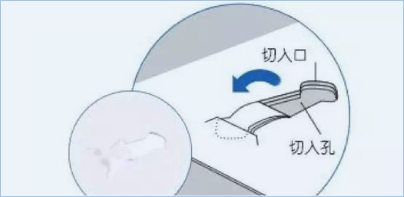

miui 查看手机连接上 wifi 的密码
- 在 wifi 页面点击分享网络，得到二维码
- 把二维码用截屏软件截取
- 在扫一扫中打开图片，可以得到ssid和密码
以TP-LINK 300M 无线路由器(TLWR842N)为例，假设已经连接网络的路由器为A，用于桥接的路由器为B。
用大头钉顶住 Reset 的小孔，直到状态灯闪烁。状态灯会连续闪烁5下。
TP-LINK_**** ，此时无密码，可直接连接


这里的更改是为了与路由器 A 的地址相区别，不然转发网络之后就找不到路由器B 的管理页面了
在网页左侧选择“网络参数”──“LAN口设置”，修改为与路由器 A 不同的地址。因为我们这里路由器 A 没有修改过，默认值为 192.168.1.1, 我们把路由器 B 设置成 192.168.1.2

我们这里是刚才设置的 192.168.1.2

在网页左侧选择“无线设置”──“基本设置”

点击 “开启WDS”

点击“(桥接的)BSSID” 下面的 “扫描” 按钮，

从列表中选择路由器A对应的网络，点击后面的 “连接” 按钮，回到前面的页面并输入密码

点击保存，提示 您已经更改了无线设置，重启后生效

点击 “重启”，进入下面的页面，再点击“重启路由器”

重新连接无线网，进入管理页面 192.168.1.2,在默认的“运行状态”页面，等待“无线状态”中的“WDS状态”显示“成功”，

在网页左侧选择“DHCP服务器”──“DHCP服务”

此时应该可以在地址栏输入 192.168.1.1,看到路由器A的管理界面了
wget -r -p -np -k <网址>
wget -r -np -l0 -nd <网址>
Logitech/罗技 MX Master 双模无线鼠标 | 参考价格：649 元
既想要鼠标的精准、快速、不易疲劳，又想要 Mac 触控板丰富的手势功能，MX Master 是唯一的选择。
相比普通的无线办公鼠标，MX Master 体型魁梧，配合顺滑的胶贴移动却十分轻松，特别设计的人体工程学外形，握起来自然舒适，用久了甚至会觉得“长在手上”一般。
为拇指提供休息区的菱格纹理“侧翼”另有玄机，下方隐藏的按键配合手势操作，可以实现 Mac 触控板的所有功能，比如最常用的桌面切换，拇指按下向左右滑就行，和用触控板时几乎一模一样。
而通过滑动力度自动切换逐级滚动与连续滚动的滑轮、可以适应几乎所有表面的无界技术、同时支持 2.4G 与蓝牙两种无线连接方式、可以连接 3 个设备并一键切换功能、可连续使用 40 天的内置锂电池等黑科技，让这只鼠标成为当之无愧的 Master。
KOKUYO/国誉 无针迷你订书机 参考价格：38 元
平时看稿子和各类产品资料比较多，事情多的时候，在电脑上来回切换不仅没效率，还容易晕，所以习惯把资料打印出来放手边看。
这些资料也就两三页纸，用这款无针的迷你订书机按一下就能“订”在一起——在纸上切割出小箭头的形状并插入切好的口中。

相比传统的订书机、回形针和长尾夹，没有“耗材”的烦恼，想订就订；酷似小鲸鱼的造型，看起来有没有觉得萌萌哒~
编辑 /etc/pacman.d/mirrorlist， 在文件的最顶端添加： Server = https://mirrors.tuna.tsinghua.edu.cn/archlinux/$repo/os/$arch
更新软件包缓存： sudo pacman -Syy
For the normal package a simple
$ sudo pacman -S docker
is all that is needed. rtu For the AUR package execute:
$ yaourt -S docker-git
The instructions here assume yaourt is installed. See Arch User Repository for information on building and installing packages from the AUR if you have not done so before.
There is a systemd service unit created for docker. To start the docker service:
$ sudo systemctl start docker
To start on system boot:
$ sudo systemctl enable docker
SSH反向连接及Autossh
稍懂一点网络的童鞋会明白，Internet上去主动连接一台内网是不可能的，一般的解决方案分两种，一种是端口映射（Port Forwarding），将内网主机的某个端口Open出防火墙，相当于两个外网主机通信；另一种是内网主机主动连接到外网主机，又被称作反向连接（Reverse Connection），这样NAT路由/防火墙就会在内网主机和外网主机之间建立映射，自然可以相互通信了。但是，这种映射是NAT路由自动维持的，不会持续下去，如果连接断开或者网络不稳定都会导致通信失败，这时内网主机需要再次主动连接到外网主机，建立连接。
A要控制B
A主机：外网，ip：123.123.123.123，sshd端口：2221
B主机：内网，sshd端口：2223
无论是外网主机A，还是内网主机B都需要跑ssh daemon
$ ssh -NfR 1234:localhost:2223 user1@123.123.123.123 -p 2221
这句话的意思是将A主机的1234端口和B主机的2223端口绑定，相当于远程端口映射（Remote Port Forwarding）。
这里每次需要输入A主机user1的登陆密码，后面会讲到解决办法。
$ ss -ant
State Recv-Q Send-Q Local Address:Port Peer Address:Port LISTEN 0 128 127.0.0.1:1234 *:*
$ ssh localhost -p1234
一开始提到，这种反向连接（Reverse Connection）不稳定，可能随时断开，需要内网主机B再次向外网A发起连接，这时需要个“朋友”帮你在内网B主机执行这条命令。它就是Autossh。
在此之前还要解决之前的一个问题，那就是每次内网主机B连接外网主机A时都需要输入密码，这个问题ssh本身是提供另外一种验证方式——通过密钥验证用户身份，实现自动登录。
ssh-keygen 产生公钥与私钥对.
ssh-copy-id 将本机的公钥复制到远程机器的authorizedkeys文件中，ssh-copy-id也能让你有到远程机器的home, ~./ssh , 和 ~/.ssh/authorizedkeys的权利
第一步:在本地机器上使用ssh-keygen产生公钥私钥对
jsmith@local-host$ [Note: You are on local-host here] jsmith@local-host$ ssh-keygen Generating public/private rsa key pair. Enter file in which to save the key (/home/jsmith/.ssh/id_rsa):[Enter key] Enter passphrase (empty for no passphrase): [Press enter key] Enter same passphrase again: [Pess enter key] Your identification has been saved in /home/jsmith/.ssh/id_rsa. Your public key has been saved in /home/jsmith/.ssh/id_rsa.pub. The key fingerprint is: 33:b3:fe:af:95:95:18:11:31:d5:de:96:2f:f2:35:f9 jsmith@local-host
第二步:用ssh-copy-id将公钥复制到远程机器中
jsmith@local-host$ ssh-copy-id -i ~/.ssh/id_rsa.pub name@remote-host jsmith@remote-host's password: Now try logging into the machine, with "ssh 'remote-host'", and check in: .ssh/authorized_keys to make sure we haven't added extra keys that you weren't expecting.
注意: ssh-copy-id 将key写到远程机器的 ~/ .ssh/authorizedkey.文件中 第三步: 登录到远程机器不用输入密码
jsmith@local-host$ ssh name@remote-host Last login: Sun Nov 16 17:22:33 2008 from 192.168.1.2 [Note: SSH did not ask for password.] jsmith@remote-host$ [Note: You are on remote-host here]
常见问题：
ssh-copy-id -u eucalyptus -i ~eucalyptus/.ssh/idrsa.pub eucalyptus@remotehost
上述是给eucalyptus用户赋予无密码登陆的权利
1 /usr/bin/ssh-copy-id: ERROR: No identities found
使用选项 -i ，当没有值传递的时候或者 如果 ~/.ssh/identity.pub 文件不可访问（不存在）, ssh-copy-id 将显示上述的错误信息 （ -i选项会优先使用将ssh-add -L的内容）
jsmith@local-host$ ssh-agent $SHELL jsmith@local-host$ ssh-add -L The agent has no identities. jsmith@local-host$ ssh-add Identity added: /home/jsmith/.ssh/id_rsa (/home/jsmith/.ssh/id_rsa) jsmith@local-host$ ssh-add -L ssh-rsa AAAAB3NzaC1yc2EAAAABIwAAAQEAsJIEILxftj8aSxMa3d8t6JvM79DyBV aHrtPhTYpq7kIEMUNzApnyxsHpH1tQ/Ow== /home/jsmith/.ssh/id_rsa jsmith@local-host$ ssh-copy-id -i remote-host jsmith@remote-host's password: Now try logging into the machine, with "ssh 'remote-host'", and check in: .ssh/authorized_keys to make sure we haven't added extra keys that you weren't expecting. [Note: This has added the key displayed by ssh-add -L]
2 ssh-copy-id应注意的三个小地方
Default public key: ssh-copy-id uses ~/.ssh/identity.pub as the default public key file (i.e when no value is passed to option -i). Instead, I wish it uses iddsa.pub, or idrsa.pub, or identity.pub as default keys. i.e If any one of them exist, it should copy that to the remote-host. If two or three of them exist, it should copy identity.pub as default.
The agent has no identities: When the ssh-agent is running and the ssh-add -L returns “The agent has no identities” (i.e no keys are added to the ssh-agent), the ssh-copy-id will still copy the message “The agent has no identities” to the remote-host’s authorizedkeys entry.
Duplicate entry in authorizedkeys: I wish ssh-copy-id validates duplicate entry on the remote-host’s authorizedkeys. If you execute ssh-copy-id multiple times on the local-host, it will keep appending the same key on the remote-host’s authorizedkeys file without checking for duplicates. Even with duplicate entries everything works as expected. But, I would like to have my authorizedkeys file clutter free.
$ autossh -M 5678 -NR 1234:localhost:2223 user1@123.123.123.123 -p2221 比之前的命令添加的一个-M 5678参数，负责通过5678端口监视连接状态，连接有问题时就会自动重连，去掉了一个-f参数，因为autossh本身就会在background运行。
3.终极方案：当重启内网B主机，谁来自动Autossh呢，加入daemon吧
以daemon方式执行，相当于root去执行autossh, ssh，这时刚才普通用户目录下的.ssh/authorizedkeys文件会不起效。有两种办法解决，一种是用autossh的参数指定.ssh路径；另外一种是以普通用户身份执行daemon，下面是第二种方式。
/bin/su -c '/usr/bin/autossh -M 5678 -NR 1234:localhost:2223 user1@123.123.123.123 -p2221' - user1
autossh还有很多参数，用来设置重连间隔等等。
将上面命令放入下面各启动方式中，根据自己系统自己配置：
SysV：/etc/inid.d/autossh
Upstart: /etc/init/autossh.conf
systemd: /usr/lib/systemd/system/autossh.service
P.S.
1.家里是ADSL的话，用DDNS，解决ip问题
2.外网有路由的可设下端口映射
3.虽然有密钥和密码保护，但还请小心使用
建立 A 机器到 B 机器的反向代理【A 机器上操作】
ssh -fCNR <portb1>:localhost:22 usrb@B.B.B.B
<portb1> 为 B 机器上端口，用来与 A 机器上的22端口绑定。
建立 B 机器上的正向代理，用作本地转发。做这一步是因为绑定后的 端口只支持本地访问【B 机器上操作】
ssh -fCNL "*:<portb2>:localhost:<portb1>' localhost
<portb2> 为本地转发端口，用以和外网通信，并将数据转发到 <portb1>，实现可以从其他机器访问。
其中的*表示接受来自任意机器的访问。
现在在 C 机器上可以通过 B 机器 ssh 到 A 机器
ssh -p <portb2> usra@B.B.B.B
How do I remap the caps lock key?
setxkbmap -option <OPTION>
Where <OPTION> can be for example of:
Note: Xmodmap is deprecated in favor of setxkbmap.
安装 wine
sudo apt-get install wine
切换到 Diablo II 的安装目录下
wine D2Loader.exe -w
如果要是想运行大箱子补丁
wine Plugy.exe -w
如果要是想运行大箱子 + hackmap 补丁
wine D2Loader.exe -w